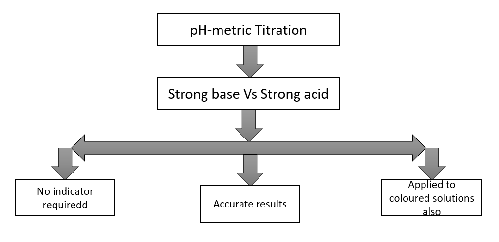
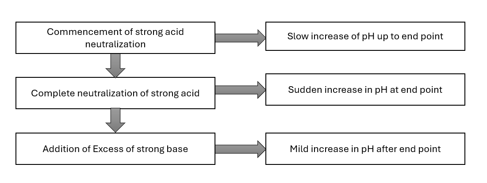
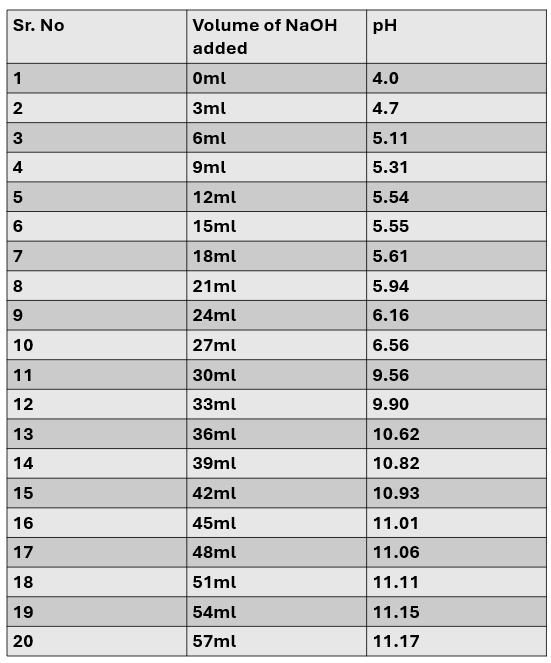
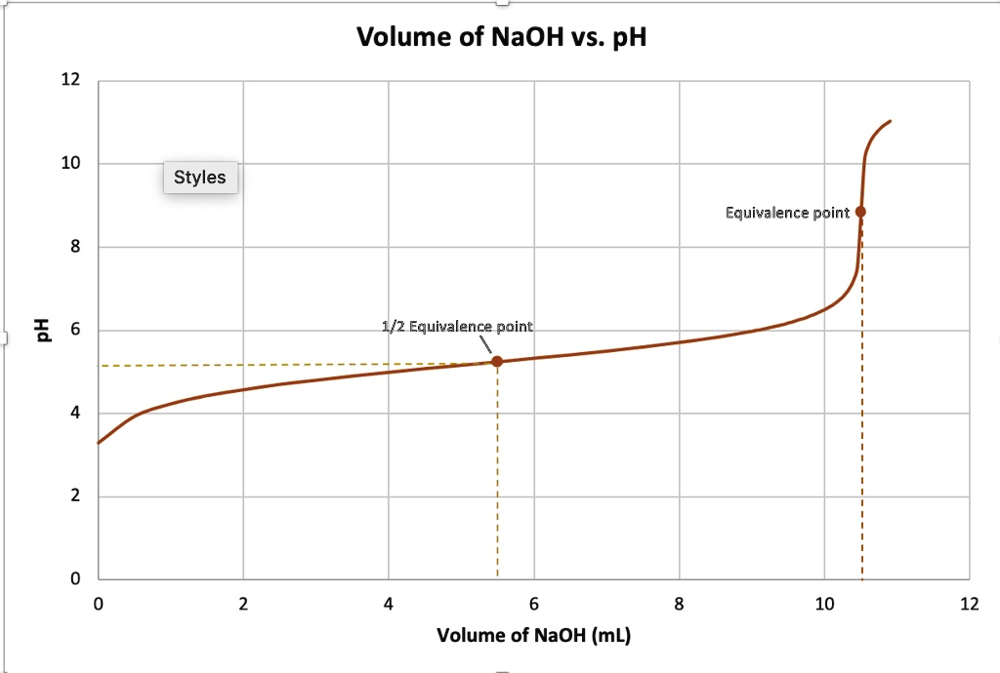
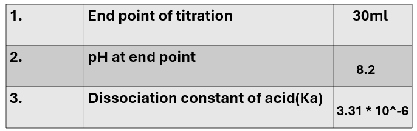

To determine dissociation constant of weak acid using pH meter.
Moles,Molarity,Normality,concentration of H+ and OH-,pH,pOH,pKa,pKb,Concepts of strong and weak acids and bases.
pH metric Titration:
Study of pH metric titration of strong acid against strong base using pH-meter without use of any indicator.

Nature of graph depends on the fact that

1. Intellectual Skills:
2. Motor Skills:
pH meter,glass electrode,burette,pipette,beaker,etc.
Chemicals:
Sodium hydroxide, HCl buffer solution(for a calibration of pH meter) and CH3COOH(acetic acid).
Calibrate the pH meter with the solution of the known pH. Wash the electrode with distilled water. Take 30 ml of weak acid (acetic acid) to unknown strength(concentration) in 100 ml of the beaker and dip the electrode in it. Measure the pH of the solution, then add the standard alkaline in appropriate amount from the burette and measure the pH after each addition. Take several readings well above the neutralization point. Plot the graph of pH Vs volume of alkali added. From the graph, determine the neutralization point.


Calculate Ka by using Henderson-Hasselbalch.
pH = pKa + log([acid] / [salt])

1. What do you meant by pH,pOH and weak acid?
1. pH (Potential of Hydrogen)
It depends on the concentration of hydrogen ions (H+) in a solution.
Formula:
pH = -log[H+]
2. pOH it depends on the (OH-)ions.
Formula:
pOH = -log[OH-]
Relationship between pH and pOH:
pH + pOH = 14
3. Weak Acid
A weak acid is an acid that does not completely ionize (dissociate) in water.
Example: Acetic acid (CH30COOH)
General reaction:
HA ⇌ H+ + A-
2. Give the name of the scientist who discovered pH.
The pH scale was discovered by Søren Peder Lauritz Sørensen in 1909.
3. Which solution is added in glass electrode?
In a glass electrode, the solution filled inside is usually hydrochloric acid (HCl) solution of constant concentration (commonly around 0.1 M).
It also contains an internal reference electrode (Ag/AgCl).
This internal HCl solution helps maintain a stable and constant potential.
4. Why the nature of HCl Vs NaOH pH metric titration graph?
The pH-metric titration graph of hydrochloric acid HCl versus sodium hydroxide NaOH is a sigmoidal or S-shaped graph.
This nature is due to the reaction between a strong acid and a strong base, where the pH changes slowly initially and increases dramatically near the equivalence point and then stabilizes in the basic region.
5. Why the activation of a liquid is needed prior to use and what care must be taken while using it?
The glass electrode must be soaked (activated) in water or dilute acid before use.This forms a thin hydrated gel layer on the glass surface. This layer is essential for the exchange of H+ ions, which allows accurate pH measurement.If not activated, the electrode gives slow, unstable, or incorrect readings.
Care to be taken while using the glass electrode:
1. Always keep the electrode moist (never allow it to dry).
2. Rinse with distilled water before and after use.
3. Do not wipe the bulb harshly (just blot gently).
4. Avoid touching the glass bulb (it is very delicate).
6. List application of pH-metry.
Applications of pH-metry:
7. How glass electrode can be represented?
The glass electrode is represented symbolically to show its internal solution, glass membrane, and external test solution.
Representation:
Ag | AgCl | HCl(internal) | Glass | Test solution(H+)
8. What are advantages of glass electrode?
Advantages of Glass Electrode:
1. Gives precise pH measurements over a wide range.
2. Unlike indicators, it is not affected by color or turbidity.
3. Provides rapid results without complex procedures.
4. Can measure pH from about 0 to 14.
5. More reliable in different chemical environments.
6. Useful in industrial and research processes.
9. Why there is sharp change in pH near end point?
Near the end point of a titration, the acid and base almost completely neutralize each other.
The reaction is:
H+ + OH −→ H2O
At this stage, the concentrations of H+ and OH- become very small and nearly equal.
So, even a tiny addition of titrant (acid or base) causes a large change in [H+].
Since pH depends on [H+], this results in a sudden (sharp) jump in pH.
10. How pH-metric method is more superior than conventional methods of titrations?
1. No indicator required-Conventional methods depend on indicators, but pH-metry measures pH directly → avoids indicator error.
2. More accurate and precise-End point is determined from the pH curve, not by color change.
3. Works for colored/turbid solutions-Indicators fail in colored solutions, but pH-metry works perfectly.
4. Suitable for weak acid-weak base titrations-Where indicators do not give a sharp end point.
5. Detects exact equivalence point-Sharp change in pH gives clear and accurate end point.